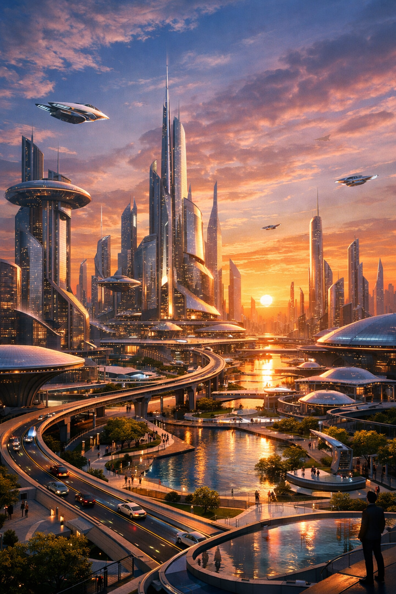
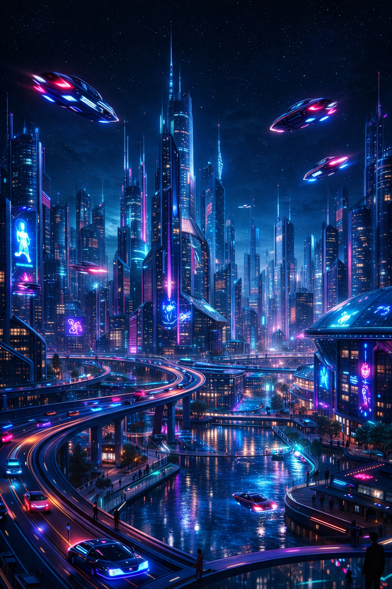
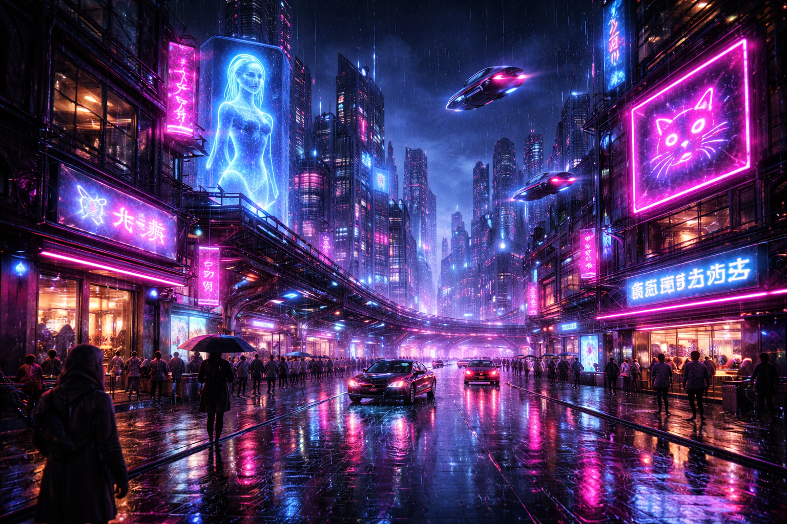

Introduction
Welcome to the evolved edition of the AI Research Newsletter. This phase moves beyond general descriptions into a structured tool analysis. We are evaluating two industry-leading models: Google Nano Banana 2 and OpenAI DALL-E 3. Our research focuses on how specific linguistic modifiers influence the "latent space" of these different architectures to determine which tool offers superior consistency and technical adherence.
AI PROMPT TEST
"A futuristic city" Google: Nano Banana 2
Google: Nano Banana 2

OpenAI: DALL-E 3Phase 2 Analysis:
At the baseline level, both tools provide general interpretations. Google focuses on architectural symmetry, while OpenAI leans toward a cleaner, more digital-art aesthetic.
"A futuristic city at night with neon lights, flying cars, and tall glass skyscrapers" Google: Nano Banana 2
Google: Nano Banana 2

OpenAI: DALL-E 3Phase 2 Analysis:
The addition of nighttime lighting triggers the "Reflective Engine" in Nano Banana 2. DALL-E 3 shows higher object density regarding the flying cars, but less atmospheric bloom.
"A cyberpunk futuristic city at night, neon pink and blue lighting, flying cars in the sky, holographic advertisements, rainy streets reflecting light, ultra-detailed, cinematic lighting, 4K, wide angle." Google: Nano Banana 2
Google: Nano Banana 2

OpenAI: DALL-E 3Phase 2 Analysis:
In this final stress test, we evaluate adherence to technical tags. Google's model captures the "rainy street" reflections with more cinematic realism, while OpenAI prioritizes the "holographic" clarity.